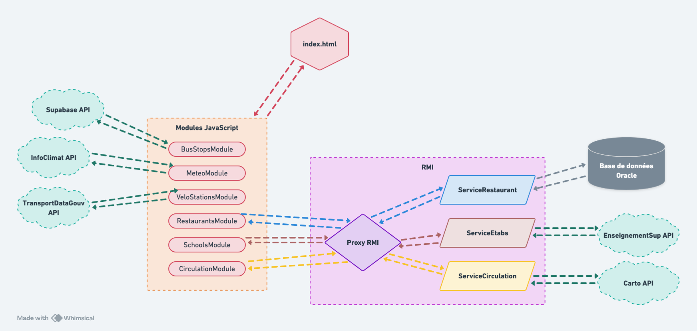

Compte Rendu
Schéma de l'architecture
Voici le schéma complet de l'architecture de notre projet, incluant les technologies utilisées et les interactions :

Réalisations
Voici un résumé des tâches accomplies :
- Affichage d'une carte de Nancy avec Leaflet, utilisant MapTiler pour le fond de carte intégré à Leaflet. Utilisation du plugin IconMaterial pour une représentation améliorée des icônes, récupéré sur GitHub.
- Récupération des données des bornes de vélib via l'API Fetch et affichage sur la carte.
- Affichage de tous les arrêts de bus en utilisant une base de données Supabase préexistante, adaptée pour le projet.
- Création de la base de données pour les restaurants.
- Mise en place d'une barre de navigation avec des onglets "Carte", "Compte Rendu" et "Ajouter un restaurant", ouvrant une modal pour l'ajout d'un restaurant dans la base de données.
- Ajout d'un module de filtrage intégré à Leaflet pour choisir les éléments à afficher sur la carte.
- Création d'un serveur Java utilisant RMI et HttpServer pour agir en tant que proxy entre les données externes et le site web.
- Implémentation d'un client utilisant HttpClient pour récupérer les informations sur les incidents routiers à Nancy.
- Création d'un client pour récupérer les informations sur les établissements supérieurs.
- Création d'un client gérant les restaurants en se connectant à la base de données.
- Ajout d'une icône de météo dans la barre de navigation pour afficher les informations météorologiques actuelles à Nancy.
- Ajout d'un bouton pour afficher l'état détaillé des services sur la carte : '✅' pour opérationnel et '❌' pour non opérationnel.
Instructions pour utiliser le projet
Avant de lancer le projet, veuillez suivre ces étapes :
- Étape 1 : Exécuter le script situé à BD/script_base_resto.sql à partir de la racine du projet pour créer la base de données des restaurants. Exécuter la classe java/Restaurant/DBConnection depuis la racine du projet pour insérer les restaurants dans la table.
- Étape 2 : Ajouter la bibliothèque JSON : Project Structure -> Libraries -> Bouton "+" -> Choisir "From Maven" et rechercher "org.json:json:20240303" -> Bouton "OK".
- Étape 3 : Lancer les services nécessaires.
- Étape 4 : Afficher la carte.